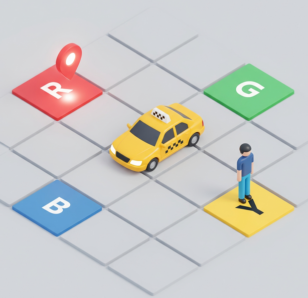
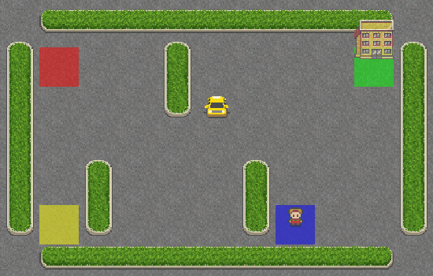
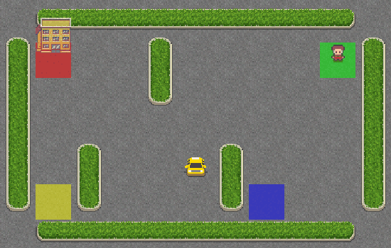

8. Reinforcement Learning#
8.1. Practical Session 2: Value-Based Reinforcement Learning#
8.1.1. Introduction#
In this practical session, we will delve into the field of Reinforcement Learning (RL), a subfield of Machine Learning where an agent learns to make decisions by interacting with an environment. Unlike supervised learning, where the model learns from a fixed dataset of labeled examples, an RL agent discovers which actions yield the highest rewards through trial and error.
The goal of the agent is to learn an optimal policy \(\pi\)—a mapping from states to actions—that maximizes the discounted cumulative reward (return) over time.
8.1.2. Problem Statement: The Taxi-v3 Environment#
We will focus on the Taxi-v3 environment, a classic problem available in the Gymnasium library (a maintained fork of OpenAI Gym).
In this scenario, a taxi driver must navigate a \(5 \times 5\) grid to pick up a passenger at one of four designated locations (Red, Green, Yellow, and Blue) and drop them off at a specific destination. The challenge lies in learning the shortest path while avoiding illegal maneuvers and minimizing time.
{kind=link}

Fig. 8.1 Taxi-v3 Reinforcement Learning problem. Image partially generated by Gemini.#
8.1.3. Markov Decision Process Formulation#
To solve this problem using RL, we must first formalize it as a Markov Decision Process (MDP). An MDP is defined by the tuple \((S, A, P, R)\):
State Space (\(S\))
The state space contains all the information needed to determine the current situation of the environment. In Taxi-v3, there are 500 discrete states. A state is defined by the combination of:
The taxi’s current position (\(5 \times 5 = 25\) possible locations).
The passenger’s location (4 designated spots or inside the taxi: \(4 + 1 = 5\) possibilities).
The destination location (4 designated spots).
Mathematically, a state \(s \in S\) can be represented as:
Action Space (\(A\))
The agent can perform one of 6 discrete actions at each time step:
\(a = 0\): Move South
\(a = 1\): Move North
\(a = 2\): Move East
\(a = 3\): Move West
\(a = 4\): Pickup passenger
\(a = 5\): Drop off passenger
Reward Function (\(R\))
The reward function \(R(s, a)\) defines the goal of the task by providing numerical feedback:
-1 for each step to encourage the shortest path.
+20 for a successful passenger drop-off.
-10 for illegal “pickup” or “drop-off” actions.
Transition Function (\(P\))
The transition function \(P(s^{\prime} | s, a)\) specifies the probability of moving to state \(s^{\prime}\) after taking action \(a\) in state \(s\). For this practical session, the dynamics are deterministic (\(P = 1.0\) for the intended movement) in this environment, provided there are no walls. If the taxi hits a wall, it remains in its current state.
8.1.4. Agent-Environment Interaction Loop#
The fundamental loop of RL involves the agent observing a state, choosing an action, and receiving feedback. This process can be summarized in the following pseudo-code:
Algorithm 8.1 (Basic RL Interaction Loop)
Inputs: Environment \(Env\), Policy \(\pi\)
Initial state: \(s_0 \leftarrow Env.reset()\)
While the episode is not finished:
Select action \(a_t\) based on policy \(\pi(s_t)\).
Execute \(a_t\) in \(Env\).
Observe reward \(r_t\) and new state \(s_{t + 1}\).
(Optional) Update \(\pi\) based on \((s_t, a_t, r_t, s_{t + 1})\).
\(s_t \leftarrow s_{t + 1}\).
8.1.5. Policy (\(\pi\))#
To illustrate the importance of learning, we can compare the following behaviors:
Untrained Agent
The following GIF shows an agent selecting actions randomly without any prior training. This is often referred to as a “brute force” approach, where the agent wanders aimlessly across the environment.

Fig. 8.2 Taxi-v3 agent selecting actions randomly without any prior training.#
Trained Agent
In contrast, this GIF shows an agent after a training phase using Reinforcement Learning. The taxi now follows the right path to pick up the passenger and deliver them to the destination efficiently.

Fig. 8.3 Taxi-v3 agent after a training phase using Reinforcement Learning.#
8.2. Exercise 1: Random Walk#
8.2.1. Objectives#
The objective of this first exercise is to familiarize yourself with the Gymnasium API and the Taxi-v3 environment dynamics. You will implement a basic interaction loop where the agent makes decisions without any learning process, relying purely on random selection (a “brute force” approach). This will serve as a baseline to evaluate the necessity and effectiveness of Reinforcement Learning algorithms.
8.2.2. Task Description#
You are required to implement a Python script that executes the interaction loop between the agent and the environment for 100 consecutive episodes. Since this is a non-learning approach, these episodes constitute the evaluation phase of a random policy.
For each episode, the agent must:
Reset the environment to a random initial state.
Select actions randomly from the action space \(A\) using
env.action_space.sample().Execute the action and transition to the next state until the episode terminates (passenger delivered) or reaches the maximum limit of 200 timesteps.
8.2.3. Performance Metrics#
To quantify the (in)efficiency of the random policy, you must collect the following three metrics for each of the 100 episodes:
Cumulative Reward: The sum of all rewards obtained by the agent from the start to the end of the episode.
Timesteps per Episode: The total number of steps taken before the episode concludes.
Number of Penalties: The count of times the agent receives a -10 reward (specifically for illegal “pickup” or “drop-off” actions).
After completing the 100 episodes, use the Matplotlib library to generate plots showing the progression of these metrics. You should display the values for each episode and calculate the mean and the standard deviation to facilitate your analysis.
8.2.4. Analysis and Visualization#
In your report, you must provide a detailed analysis of the results. Discuss why a purely random policy fails to solve the Taxi-v3 problem effectively, referring to the high number of timesteps and penalties observed.
To illustrate your findings, you must generate a GIF of one representative episode from your evaluation. To assist with this, use the following helper function to convert the RGB frames captured during rendering into a serialized GIF:
import moviepy as mp
from IPython.display import Image
def save_gif(frames, filename, fps = 10):
"""
Creates and serializes a GIF from a list of RGB frames.
Args:
frames (list): List of NumPy arrays representing RGB frames.
filename (str): Name of the file to save.
fps (int): The frames per second of the animation.
"""
clip = mp.ImageSequenceClip(frames, fps = fps)
clip.write_gif(filename, fps = fps)
Note
To use this function, you must ensure you are rendering the environment in rgb_array mode and storing the resulting frames in a list during the episode loop.
8.2.5. Optional Task: Action Masking#
For extra credit, repeat the evaluation process but incorporate the use of an Action Mask. Gymnasium’s Taxi-v3 provides a mask that identifies which actions are legal in the current state (e.g., preventing the agent from choosing “pickup” if the passenger is not present).
Implement the random loop again, but this time only sampling from the valid actions provided by the mask. Compare these results with the previous “blind” random approach and discuss the impact on the collected performance metrics.
8.2.6. Environment Setup#
To begin the implementation, ensure you have the necessary libraries installed in your Python environment. You can install them using the following commands:
pip install "gymnasium[toy-text]" numpy matplotlib moviepy
8.3. Exercise 2: SARSA#
8.3.1. Introduction to SARSA#
In the previous exercise, we observed the limitations of a random policy. To improve the agent’s performance, we will now implement SARSA (State-Action-Reward-State-Action), a fundamental on-policy Reinforcement Learning algorithm.
Unlike the “brute force” approach, SARSA allows the agent to learn a Value Function—specifically a \(Q\)-table—that estimates the quality of taking a particular action in a given state. As an on-policy method, SARSA updates its estimates based on the actual actions taken by the current policy \(\pi\), following the tuple \((s_t, a_t, r_{t + 1}, s_{t + 1}, a_{t + 1})\).
8.3.2. The SARSA Update Rule#
The core of the algorithm is the update of the \(Q\)-values. For each transition, the agent updates its knowledge according to the following mathematical expression:
Where the components are defined as follows:
\(Q(s_t, a_t)\): The current estimate of the value of action \(a_t\) in state \(s_t\).
\(\alpha\) (Learning Rate): Determines to what extent newly acquired information overrides old information (\(0 < \alpha \leq 1\)).
\(r_{t + 1}\): The immediate reward received after executing action \(a_t\).
\(\gamma\) (Discount Factor): Quantifies the importance of future rewards (\(0 \leq \gamma \leq 1\)). A value close to 1 emphasizes long-term success.
\(Q(s_{t + 1}, a_{t + 1})\): The estimated value of the action \(a_{t + 1}\) actually chosen in the next state \(s_{t + 1}\) according to the current policy.
\([r_{t + 1} + \gamma Q(s_{t + 1}, a_{t + 1}) - Q(s_t, a_t)]\): This term is known as the TD Error (Temporal Difference Error).
8.3.3. Exploration vs. Exploitation#
A critical challenge in RL is the trade-off between exploration (trying new actions) and exploitation (using known information). To address this, you must implement an \(\epsilon\)-greedy strategy to select actions:
With probability \(\epsilon\) (Exploration Rate), the agent selects a random action.
With probability \(1 - \epsilon\), the agent selects the action with the highest \(Q\)-value for the current state.
8.3.4. Implementation Tasks#
You must implement the following two distinct phases:
Phase A: Training
Implement the SARSA training loop for the Taxi-v3 environment. During this phase, the agent will populate and update the \(Q\)-table. You are responsible for:
Initializing a \(Q\)-table of size \(500 \times 6\).
Setting appropriate values for the hyperparameters (\(\alpha\), \(\gamma\), and \(\epsilon\)).
Running the training loop for a sufficient number of episodes until the policy converges.
Generating Matplotlib graphs for Cumulative Reward, Timesteps, and Penalties.
Calculating the mean and the standard deviation for the three metrics.
Phase B: Evaluation
Once training is complete, evaluate the learned policy over 100 episodes. In this phase, the agent should act greedily (using the learned \(Q\)-table to pick the best action) to demonstrate the effectiveness of the training.
8.3.5. Analysis and Visualization#
Using the data collected during the 100 evaluation episodes, provide the following:
Performance Plots: Generate Matplotlib graphs for Cumulative Reward, Timesteps, and Penalties.
Visual Demonstration: Create a GIF showing the agent successfully navigating the environment and delivering the passenger.
Discussion: Analyze the results and discuss the choice of your hyperparameters. You must justify why your specific values for \(\alpha\), \(\gamma\), and \(\epsilon\) produced an effective policy and how they influenced the learning process.
Compare these results with the random agent from Exercise 1. How does the “intelligence” provided by SARSA change the behavior of the taxi?
8.4. Exercise 3: Q-Learning#
8.4.1. Introduction to Q-Learning#
Building upon the previous exercise, we will now implement Q-Learning. While SARSA is an on-policy method, Q-Learning is a popular off-policy algorithm. The fundamental difference lies in how the agent updates its value estimates: whereas SARSA uses the action actually selected by the current policy for the next state, Q-Learning updates its estimates using the maximum possible value of the next state, regardless of the action that will actually be taken.
8.4.2. The Q-Learning Update Rule#
The agent learns a mapping of states to optimal actions by iteratively updating the \(Q\)-table. The mathematical formulation for the update rule in Q-Learning is as follows:
In this equation:
\(Q(s_t, a_t)\): The current value for the state-action pair.
\(\alpha\) (Learning Rate): Controls the update magnitude (\(0 < \alpha \leq 1\)).
\(r_{t + 1}\): The reward obtained after taking action \(a_t\).
\(\gamma\) (Discount Factor): Determines the weight of future rewards (\(0 \leq \gamma \leq 1\)).
\(\max_{a} Q(s_{t + 1}, a)\): The maximum estimated value for the next state \(s_{t + 1}\) over all possible actions \(a\). This term represents the agent’s “optimism” about the future, independent of its exploration policy.
\([r_{t + 1} + \gamma \max_{a} Q(s_{t + 1}, a) - Q(s_t, a_t)]\): This term is known as the TD Error (Temporal Difference Error).
8.4.3. Implementation Tasks#
You must implement the interaction loop for the Taxi-v3 environment using the same three hyperparameters as in Exercise 2:
\(\alpha\).
\(\gamma\).
\(\epsilon\) (Exploration Rate) for the \(\epsilon\)-greedy strategy used during training.
Phase A: Training
Develop the training loop to populate the \(Q\)-table over several thousand episodes. During this phase, the agent should balance exploration and exploitation using the \(\epsilon\)-greedy approach.
Phase B: Evaluation
After training, execute the evaluation phase for 100 consecutive episodes. In this phase, the agent must act purely greedily by selecting the action with the highest \(Q\)-value for each state.
8.4.4. Analysis and Visualization#
For both phases, you must record and plot the same three metrics:
Cumulative Reward per episode.
Timesteps per episode.
Penalties (illegal pickups/drop-offs) per episode.
Additionally, for the evaluation phase, create a GIF of a successful episode to visualize the learned policy.
Comparative Discussion
A critical part of this exercise is the comparative analysis between the SARSA (on-policy) and Q-Learning (off-policy) solutions. You must:
Compare the convergence speed and the final stability of the policies.
Analyze the impact of the hyperparameters on both algorithms.
Discuss the potential behavioral differences between an agent that learns based on its actual path (SARSA) versus an agent that learns based on the theoretical maximum (Q-Learning).
8.5. Exercise 4: Deep Q-Network#
8.5.1. Deep Reinforcement Learning#
In the previous exercises, we successfully solved the Taxi-v3 environment using a \(Q\)-table. However, tabular methods become computationally impractical as the state space grows. In this final exercise, we will transition to Deep Reinforcement Learning (DRL) by replacing the static \(Q\)-table with a Neural Network.
To implement this, we will use PyTorch, a leading open-source Machine Learning framework that provides the tools necessary to build and train complex neural architectures. We can install this Deep Learning framework using:
pip install torch
8.5.2. The Q-Network Architecture#
Unlike the \(Q\)-table, the Neural Network will take the current state as input and output the estimated \(Q\)-values for all possible actions. Below is the Python implementation for our DQN agent:
import torch
import torch.nn as nn
class DQN(nn.Module):
def __init__(self, n_states, n_actions):
super(DQN, self).__init__()
# Embedding layer to handle discrete states
self.embedding_layer = nn.Embedding(n_states, 10)
# Fully connected layers
self.fc_layer1 = nn.Linear(10, 50)
self.fc_layer2 = nn.Linear(50, 50)
# Output layer
self.fc_layer3 = nn.Linear(50, n_actions)
def forward(self, x):
x = self.embedding_layer(x)
x = torch.relu(self.fc_layer1(x))
x = torch.relu(self.fc_layer2(x))
return self.fc_layer3(x)
Layer Explanation
Embedding Layer: Since our state is a single discrete integer (0-499), this layer maps it to a dense vector of size 10, allowing the network to learn meaningful relationships between states.
Fully Connected Layers: These hidden layers (with 50 neurons each) perform non-linear transformations using the ReLU activation function to extract features from the state representation.
Output Layer: This final layer maps the processed information to the 6 possible actions, representing the \(Q\)-value for each action in the given state.
8.5.3. The DQN Algorithm with Experience Replay#
To stabilize the training of neural networks in RL, you will implement a sophisticated version of DQN that includes Experience Replay and a Target Network, as outlined in the following pseudo-code:
Algorithm 8.2 (DQN Training Phase with Experience Replay and Target Network )
Inputs: Target Network Update Frequency \(C\)
Initialize: Replay Memory \(D\), Policy Network \(Q_{\theta}\), Target Network \(Q_{\theta^-}\)
For each episode:
Reset environment to state \(s\).
While the episode is not finished:
Select action \(a_t\) using \(\epsilon\)-greedy strategy based on \(Q_{\theta}(s_t)\).
Execute \(a_t\) and observe reward \(r_t\) and next state \(s_{t + 1}\).
Store transition \((s_t, a_t, r_t, s_{t + 1})\) in \(D\).
Sample a random mini-batch from \(D\).
Compute TD Target for the mini-batch using \(Q_{\theta^-}\).
Update \(Q_{\theta}\) by minimizing the computed loss.
Update Target Network: every \(C\) steps, set \(\theta^- \leftarrow \theta\).
\(s_t \leftarrow s_{t + 1}\).
8.5.4. Implementation Tasks#
You must complete two phases:
Phase A: Training
Implement the loop above. In addition to the standard hyperparameters (\(\alpha\), \(\gamma\), \(\epsilon\)), you must tune the Batch Size, Replay Memory Size, and the Target Network Update Frequency.
Phase B: Evaluation
Test your trained network over 100 episodes using a greedy policy.
8.5.5. Analysis and Visualization#
Loss and Optimizer: You must select an appropriate Loss Function and an Optimizer from the PyTorch library to train the Q-Network.
Comparative Report: Compare your DQN results with the SARSA and Q-Learning agents from previous exercises. Discuss why the deep approach might be more stable or complex to tune.
Visualizations: Provide performance graphs and a GIF of a successful taxi delivery.
8.5.6. Optional Task: Parameter Decay#
For extra points, implement a decay strategy for the learning rate (\(\alpha\)), the discount factor (\(\gamma\)), or the exploration rate (\(\epsilon\)). Justify how decreasing these values over time improves the stability and performance of your agent.